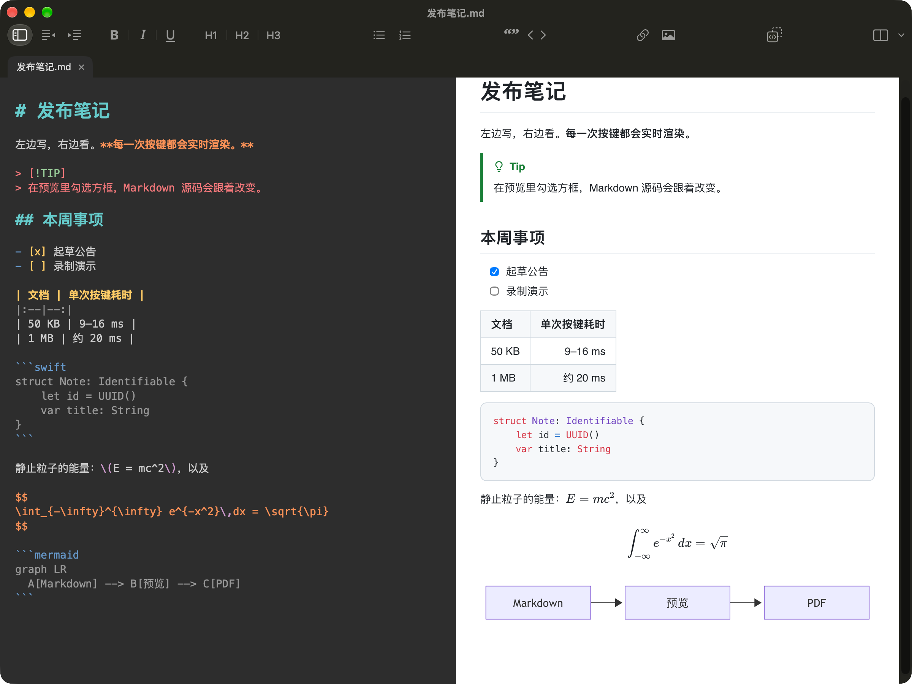
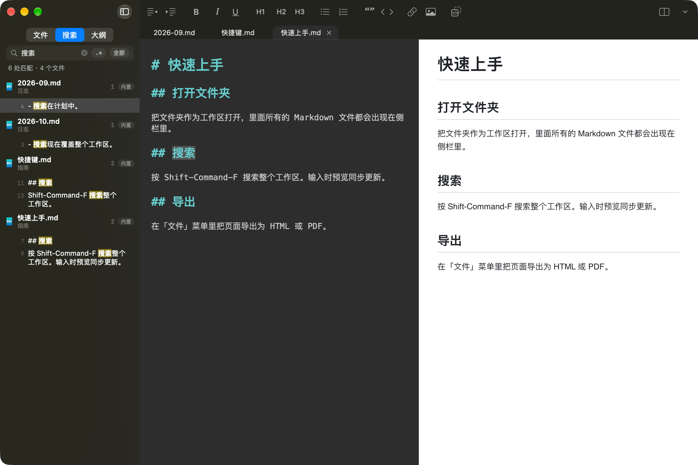

可交互的预览
在预览里勾选任务框，Markdown 源码随之改写。编辑区与预览双向同步滚动。
MacDown 的新版精神续作：用 Swift 为 macOS 26 写成的免费开源 Markdown 编辑器，原生支持苹果芯片。左边是深色源码，右边是实时预览，边打字边在毫秒间刷新。
$ brew install --cask xuanji86/tap/macdown2

MacDown2.0 与 MacDown 共享的是一种理念，而不是代码。每一层都是为今天的 Mac 选的。
一次编辑之后更新预览所需的时间（含布局），与 MacDown 0.7.3 对比，越低越好。
| 场景 | MacDown2.0 | MacDown 0.7.3 | 快 |
|---|---|---|---|
| 12.6 KB 文档 | 3.1 ms | 8.6 ms | 2.8× |
| 50 KB 文档 | 3.2 ms | 10.7 ms | 3.3× |
| 1 MB 文档 | 7.5 ms | 78.5 ms | 10× |
| 200 个公式 | 4.1 ms | 495.5 ms | 121× |
| 300 个代码块 | 3.8 ms | 48.3 ms | 13× |
每次编辑后预览更新耗时的中位数，含布局。测试机器：Apple M5 Pro，macOS 27.2。离屏测量：从编辑发生到预览完成布局计时，预览在下一个显示帧绘制。MacDown 0.7.3 每次按键都会重新载入整页；MacDown2.0 只重新渲染改动过的部分。
在预览里勾选任务框，Markdown 源码随之改写。编辑区与预览双向同步滚动。
GFM 表格、任务列表、脚注、GitHub 提示块和 ==高亮==。
KaTeX 公式、highlight.js 代码高亮和 Mermaid 图表。
支持 YAML 或 TOML front matter，可隐藏或显示为表格。
加粗、斜体紧贴中文标点也能正确识别。
Finder 风格的文件树、标签页、整个文件夹的全文搜索，以及大纲。
UTF-8、UTF-16、GB18030、Shift_JIS、Windows-1252、Mac Roman。别的程序改了文件会自动重新载入。
HTML、分页 PDF 和打印。导出的 HTML 经过净化。
在 Finder 里按空格，直接看到渲染后的效果。
近似预览 callout、分块和交叉引用。代码单元只高亮，不执行。
编辑器 7 套、预览 8 套，各自独立选择，也可以跟随系统深浅色。
中英文界面，可按应用单独设置语言。
侧栏用的是 Finder 同款图标，编辑区上方是标签页，可对整个文件夹做全文搜索（可开正则），另有当前文档的大纲。

在应用里打开文件和文件夹，或者无头渲染 HTML 与 PDF，不需要窗口，也没有 Dock 图标。Homebrew cask 会帮你装好。
$ brew install --cask xuanji86/tap/macdown2
需要 macOS 26 或更新版本；一个版本同时支持 Apple Silicon 与 Intel。免费开源。应用未经公证：手动下载的版本第一次打开时，请到「系统设置 › 隐私与安全性」点「仍要打开」。用 Homebrew cask 安装则会自动清除隔离标记。README 里的安装说明